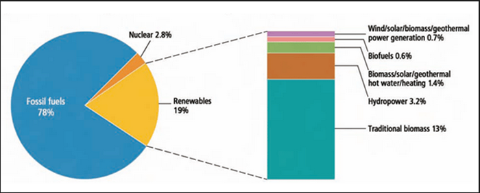
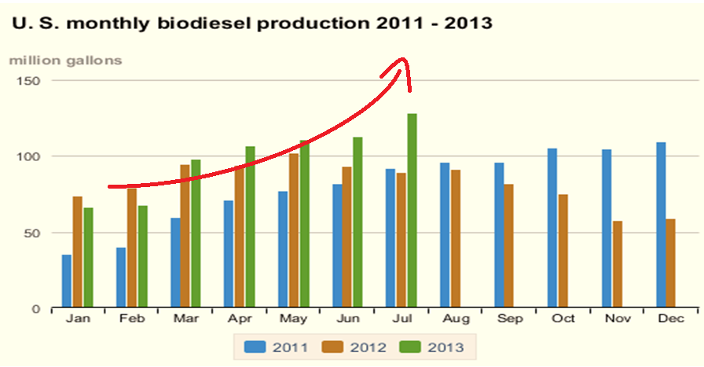
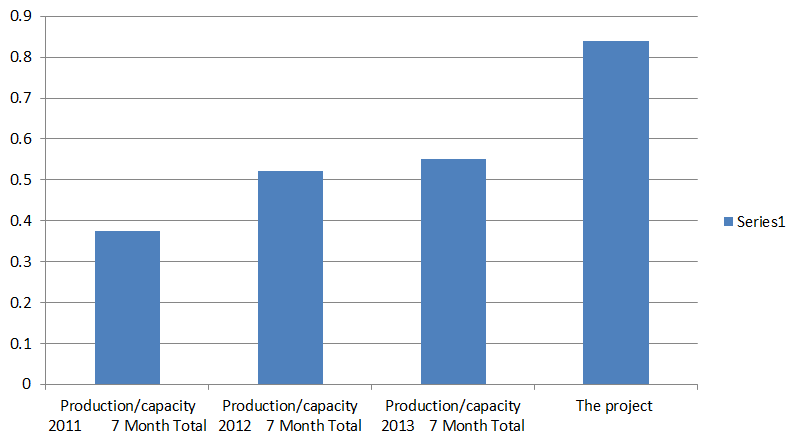
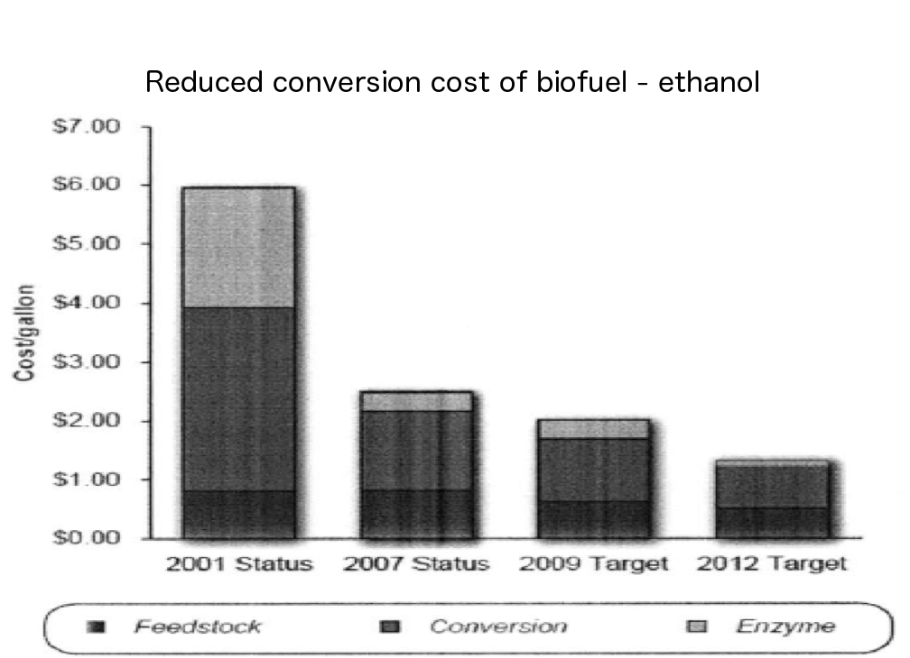

Biodiesel industry
Market size
- US oil production
- Biodiesel production 
Demand
- Individual consumers
- Military demand
- Transportation
+ 10% Others
Demand
- Individual consumers
- Price: biodiesel's is higher than diesel's by 7.7%
- Infrastructure: available at only 1.2% of total U.S. gas stations
$\Longrightarrow$Make it hard to commercialize biodiesel
$\Longrightarrow$Most companies need subsidy to maintain their business
Demand
- Individual consumers
- Military demand
- Target: 50% of biofuel by 2020
- Transportation - Airline Industry
- Target: 1% of biofuel by 2015
Production

Production
Production
- General trend of increase in demand
- 50% of idle capacity 
Production
- General trend of increase in demand
- 50% of idle capacity
- How many gallons can be sold from one gallon of capacity?
Production
- General trend of increase in demand
- 50% of idle capacity
- About 20% of capacity can be sold
Profitability
- Profit per unit $=\$0.59/\text{gallon}$
Profitability
Price per unit $=\$4.19/\text{gallon}$less
COGS per unit $=\$3.05/\text{gallon}$
Operation expense per unit $=\$2.05/\text{gallon}$
Net profit per unit $=\$$$-0.91$$/\text{gallon}$
Add
Subsidy per gallon $=\$1.5/\text{gallon}$
Profit per unit$=\$0.59/\text{gallon}$
Profitability
- Profit per unit $=\$0.59/\text{gallon}$
- Sales $/$ capcity $=20\%$
- profit per unit $\times$ sales $/$ capacity
Profitability
- Profit per unit $=\$0.59/\text{gallon}$
- Sales $/$ capcity $=20\%$
- profit per capacity $=\$0.06/\text{gallon}$
Summary
- Profitability: Need subsidy from government to maintain their business
- Demand
- A potential increase in scale of economy (military, transportation)
- Hard to commercialize, but...
Summary
Summary & Prediction
- Profitability: Need subsidy from government to maintain their business
- Demand
- A potential increase in scale of economy (military, transportation)
- Hard to commercialize, but, we have reason to believe the same trend of reduced ethanol conversion cost in biodiesel
- Production: Enough capacity (50% idle) to meet possible increase in demand in the future
Recommendation on the project
- Production capacity
Recommendation on the project
- Production capacity: almost at full potential
- Profit / capacity
Recommendation on the project
- Production capacity: almost at full potential
- Profit / capacity: Great advantage over industry
- Why? A great customer profile - able to sell 80% of capacity
Recommendation on the project
- Production capacity: almost at full potential
- Profit / capacity: Great advantage over industry
- Why? A great customer profile - able to sell 80% of capacity
Recommend: Maintain a good relationship with current customers, and expand production capacity at competitive cost to meet future increase in demand of biodiesel